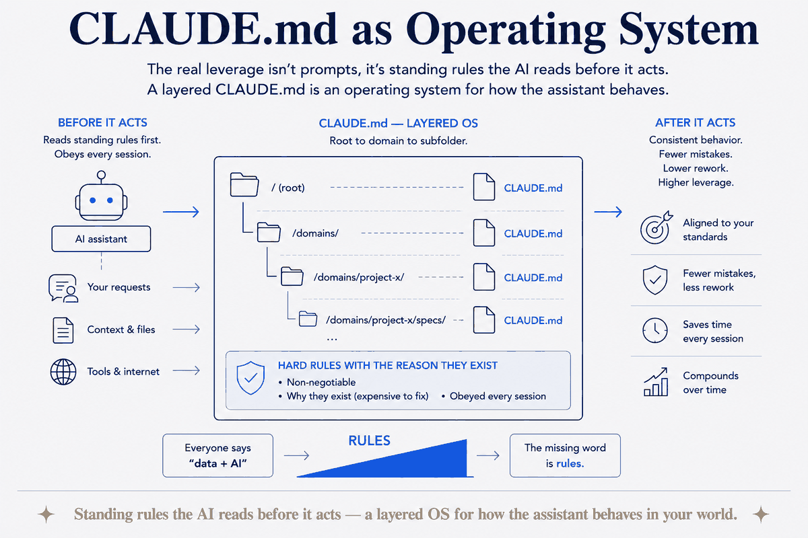

Standing rules the AI reads before it acts — a layered OS for how the assistant behaves in your world.

The real leverage isn't prompts, it's standing rules the AI reads before it acts. A layered CLAUDE.md — root to domain to subfolder — is an operating system for how the assistant behaves: HARD rules with the reason they exist (expensive to fix), obeyed every session. Rules are the wedge; everyone says 'data + AI', the missing word is rules.
The layering is what makes it an OS rather than a preferences file. Root rules are how you work everywhere; domain rules apply in one part of your world; a subfolder can add what only matters there. The assistant reads the stack and behaves accordingly — no re-explaining, no drift between sessions.
The detail that earns compliance is stating why a rule exists. "Never do X" invites a clever exception; "never do X, because it cost us Y" doesn't. Rules with reasons survive contact with a model trying to be helpful.